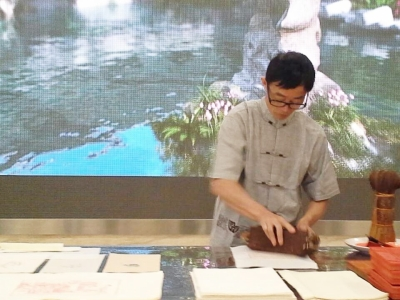
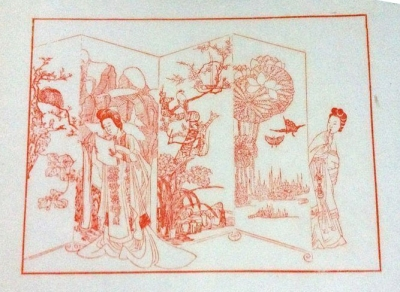

两件扬州汉代文物引关注

李江民现场演示刷印

《西厢记·窥简图》资料图片昨天，习近平夫人彭丽媛邀请出席青奥会开幕式的部分外方领导人夫人参观了南京博物院。现场观看了扬州雕版印刷、宜兴紫砂壶、苏州核雕、徐州香包、南京云锦、惠山泥人、苏州刺绣、桃花坞年画等中国非物质文化遗产展的制作演示，民间艺人精巧的技艺令来宾们赞叹不已。江都王陵出土的铜编钟和30多年前出土于扬州的错银神兽纹铜牛灯，吸引了彭丽媛和外方领导人夫人们的关注。
1
铜编钟铜牛灯
两件扬州汉代文物引起关注
昨天上午，彭丽媛陪同各国政要夫人们来到南京博物院，参观了历史馆还有特展馆的清宫文物。其中就观看了展厅里陈列的大云山汉墓出土的铜编钟。考古专家表示，大云山江都王陵出土的大量珍贵文物，见证了江都王刘非奢华的生活，其中出土的编钟编磬便是当时最流行的打击乐器。大云山1号墓出土的编钟一套19件，其钮钟和甬钟的组合与南越王墓和洛庄汉墓乐器坑所出编钟组合相同，为迄今国内所出第三套完整的西汉编钟。此外，该编钟上下的装饰——鎏金龙纹铜虡(jù)业与鎏金铜虡兽座——以前只出现在史料记载中，此次为首次发现，意义重大。
同样，展厅里陈列的另一件出土于扬州的重量级文物——“国宝”错银神兽纹铜牛灯，也吸引了彭丽媛和外方领导人夫人们的关注。这件铜牛灯，灯座造型为一头体态健壮的黄牛，通体饰精细的错银纹饰，灯盏安装在铜牛正中的圆形基座上，下面有可以转动的灯盘，可以任意调节灯光照射的角度。灯盏上部，有带菱形镂空装饰的挡风板，挡风板可以活动，可以起到挡风和调节灯光强度的双重作用。灯罩可以进行360°旋转。在灯罩的上边，有菱形的空格，可以散热，还可以透光，设计非常巧妙。而灯罩的顶部，伸出一个管道和牛头顶部相连接，形成一条完整的排烟通道，中空的牛腹部可以盛水，点灯产生的烟灰，则通过烟道进入牛肚子，溶在水中，从而减少室内污染。据了解，1980年，考古人员在邗江县发现了一座古墓，其中铜牛灯和金印格外引人注目。根据金印推断出墓主人是东汉广陵王刘荆。这种导烟除污系统在汉代无疑是非常先进的，它们不仅是绝妙的艺术珍品，更是环保产品，从侧面反映了扬州人早在汉代就非常讲究生活质量。
夫人们对汉代文物表现出了浓厚的兴致。南京博物院院长龚良说：“大云山汉墓出土的编钟、东汉错银铜牛灯、金缕玉衣、银缕玉衣，都让夫人们感到好奇，所以，她们在这些文物面前逗留的时间都比较长。”龚良说，看到大云山汉墓的编钟，彭丽媛还向外国政要夫人们讲解了中国古代的音律。
东汉错银铜牛灯是一件环保型灯具，对这件铜牛灯，夫人们也很感兴趣。龚良称：“她们都觉得，在汉代就有这么强的环保意识，真是很了不起。”
2
扬州雕版印刷
第一个展示，作品赠国际友人
昨天在南京博物院，彭丽媛和外方领导人夫人们还观看了扬州雕版印刷、宜兴紫砂壶、苏州核雕、徐州香包、南京云锦、惠山泥人、苏州刺绣、桃花坞年画等制作演示，对各位非物质文化遗产传承人精巧技艺赞不绝口。昨天傍晚，记者采访了刚从南京回来的扬州崇文堂雕版印刷传习所创办人李江民，他还沉浸在激动与兴奋之中。
曾经供职于广陵古籍刻印社的李江民告诉记者，这次他是受文化部的委派到南京博物院参加“非遗”的现场演示，“8月14日我就到南京了，这几天彩排了很多次，有8个‘非遗’项目现场演示，一开始安排扬州雕版印刷是第三个。”但是，前天晚上11点多，他接到通知，说调整了“非遗”现场演示的顺序，扬州雕版印刷排到了第一个，“我激动得一夜没有睡好。”按照规定，昨天一早7点起床后，匆匆吃完早餐，7：30，“非遗”传承人们就集中到一起，随后，“我们经过了三次安检才进入展厅。”
据李江民回忆，彭丽媛和外方领导人夫人们是在昨天上午11点20分左右开始参观“非遗”的。讲解员介绍正在现场演示的李江民后，彭丽媛就伸出手来与李江民握手：“李大师，你好！”
扬州雕版印刷区域一共有两张桌子，一张桌子用于李江民在现场演示刷印工序，还有一张桌子上展示的是李大师的代表作，彭丽媛和外方领导人夫人们饶有兴趣地观看着。原本安排在扬州雕版印刷区域停留的时间是一分钟。彭丽媛用一口流利的英语向外方领导人夫人们介绍起了扬州雕版印刷这一古老的工艺，“她一边看一边介绍说，雕版印刷是中国古代四大发明之一，是中国国粹，这些传承人非常了不起，对中国文化的传承作出了贡献。”在现场，李江民将原大复制的明代刻本《西厢记图》中的《窥简图》赠送给外方领导人的夫人们。
事后，李江民粗略地估算了一下，彭丽媛陪同外方领导人夫人们观看扬州雕版印刷用了大约7分钟的时间，李江民感受颇深地说：“《西厢记图》一共有20张图，《窥简图》是其中最经典的一张图，将它赠送给外方领导人夫人们，也是让扬州雕版印刷走向世界。”